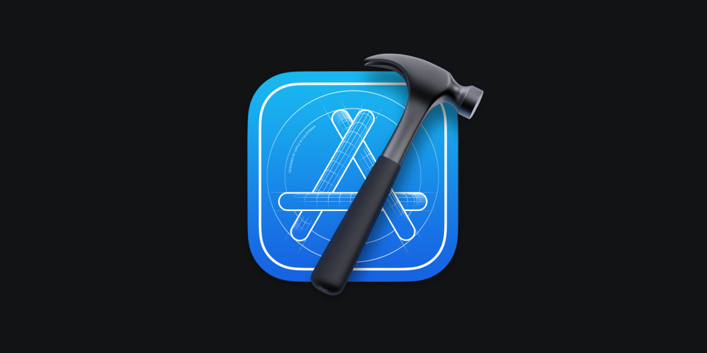
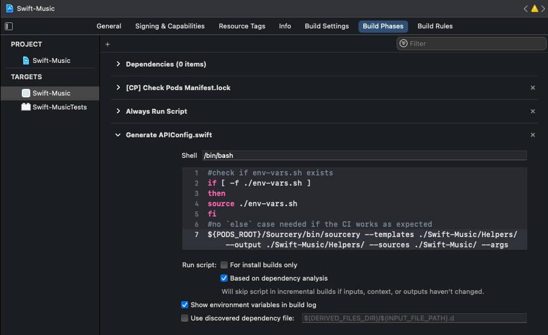

Environment Variables (or Project Secrets) are present in the vast majority of software projects. Whether they be API Keys, Passwords, Tokens or other sensitive information; they should never be pushed to an unencrypted remote repository. That being said, all too often, this is not the case and sensitive information finds its way into unencrypted repos. 😬
This is a big problem, particularly when we start to think about CI/CD pipelines too. 🤔 However, fear not! In this blog post, we'll look at this problem in an Xcode specific context and how we can avoid sensitive information being checked into source control.
Our goal here is to pass the environment variables into our project at build time; and then for our build process to generate a .swift file containing our secrets that can be used within the codebase. The solution has 3 main steps; Bash Script, Xcode Injection and Swift codegen. Lets look at each step in turn.
First let’s create a file named env-vars.sh which contains the environment variables we need to use in our project. For example:
export EXAMPLE_API_KEY=ABCDEF123456
export EXAMPLE_PASSWORD=PASSWORD
Example env-vars file.
We’ll add this into the root directory of our Xcode project and also add it to our .gitignore to avoid the file being committed to source control.
Once we’ve created our env-vars.sh file, we need to make these variables available to Xcode and our Swift code. To do this, we’ll use a combination of build run scripts and a Swift codegen tool called Sourcery.
First, lets install Sourcery via CocoaPods. To do this, add pod 'Sourcery' to your Podfile before running pod install to install the dependency. Once installed, we’ll head into Xcode and open the ‘Build Phases’ tab within our example app target. Here we’ll create a new ‘Run Script’ that will run each time our target builds.
(Note: This script must be added before the ‘Compile Sources’ script for reasons we’ll come to).

Adding a new run script into Build Phases
Below is the script used. Each time a new variable is added to our env-vars.sh file; the script will need to be updated to parse out the variable.
if [ -f ./env-vars.sh ]
then
source ./env-vars.sh
fi
${PODS_ROOT}/Sourcery/bin/sourcery --templates ./Swift-Music/Helpers/ --output ./Swift-Music/Helpers/ --sources ./Swift-Music/ --args example_api_key=$EXAMPLE_API_KEY,example_password=$EXAMPLE_PASSWORD
Example run script.
In a nutshell, the script will source our env-vars.sh file, parse out each environment variable before using Sourcery to do its magic and generate our Swift secrets file ✨.
You’ll notice our run script makes reference to a --templates argument. This directory requires a .stencil template file to be present which Sourcery will use to generate our .swift file containing our environment variables. We’ll create and name this file APIConfig.stencil so that APIConfig.generated.swift is generated.
//
// APIConfig.swift
// Swift-Music
//
// Created by James Shaw on 21/08/2021.
// Copyright © 2021 James Shaw. All rights reserved.
//
import Foundation
import UIKit
public struct APIConfig {
static let apiKey = "{{ argument.example_api_key }}"
static let password = "{{ argument.example_password }}"
}
Example APIConfig.stencil file.
Now, build the project (⌘+B) once so that our APIConfig.generated.swift file gets generated like the example below. 🚀
// Generated using Sourcery 0.15.0 — https://github.com/krzysztofzablocki/Sourcery
// DO NOT EDIT
//
// APIConfig.swift
// Swift-Music
//
// Created by James Shaw on 21/08/2021.
// Copyright © 2021 James Shaw. All rights reserved.
//
import Foundation
import UIKit
struct APIConfig {
static let apiKey = "ABCDEF123456"
static let password = "PASSWORD"
}
Example APIConfig.generated.swift file.
Sourcery will add the generated file into the directory passed as the --output argument in our build script. Once we drag the file from Finder into our Xcode project, we’ll be able to access the variables from inside our source code. 🎉
...
let client = APIClient(key: APIConfig.apiKey)
...
Now given this file contains all our secrets, we’ll need to make sure it’s added to our .gitignore too. The file will also need to be added to the ‘Compile Sources’ and this is the reason why our build script needs to run first. 👍🏻
PS: Please do make sure your .generated.swift and env-vars.sh files get added to your .gitignore so your secrets don’t accidentally end up in your repo 😅.
So there we have it, a simple way to generate environment variables or project secrets in Xcode whilst keeping them out of source control. It's a really important tool and one that becomes even more powerful when building with a CI/CD pipeline. 🔁 Perhaps I'll cover this in a future blog post.
Thanks for reading my post! If you have any questions, feel free to contact me on Twitter @jsh8w.